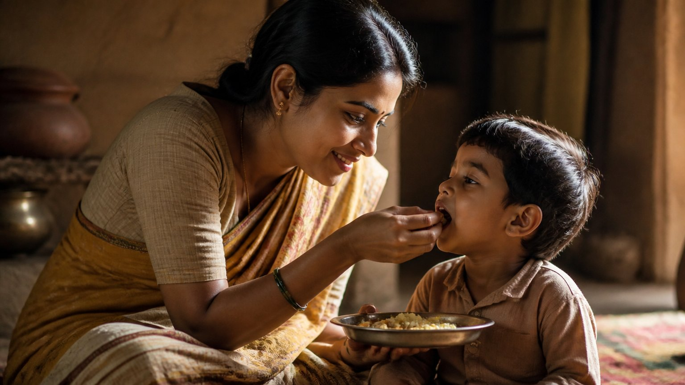

वैलेंटाइन का मौसम हो या कोई भी दिन, "प्रेम" शब्द हम सब बहुत सहजता से बोलते हैं। पर क्या हम सचमुच जानते हैं कि प्रेम है क्या?
इस प्रवचन में एक बहुत सीधी और चुनौती देने वाली बात कही गई है: जिसे हम जीवन भर प्रेम कहते रहे, वह अक्सर प्रेम होता ही नहीं।
प्रेम के अवतार भी अलग क्यों हुए?
शुरुआत एक प्रश्न से होती है। जो स्वयं प्रेम के अवतार थे, उनका वियोग क्यों हुआ? और अलग होकर भी वे भीतर से ठीक कैसे रहे?
उनके संबंध को व्यभिचार क्यों नहीं कहा जाता? क्योंकि वे कई जन्मों से स्वयं लक्ष्मी और विष्णु हैं, जो लीला करने आए थे। यह बात एक दिन में, एक क्षण में समझ नहीं आती।
प्रेम ही ईश्वर है
सूत्र सरल है: प्रेम ही ईश्वर है, और प्रेम ही लक्ष्मी तत्व है।
महालक्ष्मी की पूजा में जिस दैवी संपत्ति (divine qualities) की बात होती है, उसके लक्षण देखिए:
- निर्हेतुक दया: बिना किसी कारण के करुणा
- अभय: यह भाव कि यह पूरा विश्व मेरा ही है
- गलती करने वाले पर भी क्रोध न करना, क्षमा
ये सब प्रेम के ही लक्षण हैं। और यही हमें हृदय चक्र (heart centre) तक ले जाते हैं।
क्या प्रेम सिर्फ पति-पत्नी में होता है?
हमें लगता है कि प्रेम सबसे अधिक पति-पत्नी में होता है। पर देवी पुराण कहता है कि कलियुग में वहीं सबसे कम होगा। बाहर अधिक होगा, क्योंकि बाहर संपर्क का समय अधिक है। गुरुजी स्पष्ट कहते हैं कि यह उनका नहीं, स्वामी विवेकानंद और पुराण का वचन है।
एक दृश्य सोचिए। घर में अभी-अभी झगड़ा हुआ, और कोई मेहमान आ गया। तुरंत आवाज़ बदल जाती है, एकदम मीठी हो जाती है। और जहाँ प्रेम होना चाहिए, वहाँ क्यों नहीं?
क्या आपकी सबसे कोमल आवाज़ आपके अपनों के लिए है, या बाहर वालों के लिए?
यहाँ गुरुजी साफ़ करते हैं कि वे व्यभिचार को बढ़ावा नहीं दे रहे। वे बस यह दिखा रहे हैं कि वह होता क्यों है। यदि दोनों विपरीत लिंग के हैं, तो काम भी आ जाता है। इसलिए प्रेम और काम को पहले अलग-अलग ठीक से समझना होगा।
शादी करने से ईश्वर नहीं मिलता
यदि प्रेम ही ईश्वर है, तो क्या गृहस्थ आश्रम में प्रवेश करते ही ईश्वर मिल गया? ऐसा हो ही नहीं सकता।
यदि ऐसा होता, तो वानप्रस्थ, संन्यास, जीवन्मुक्ति, समाधि और कैवल्य की कोई आवश्यकता ही न रहती। इन सबके बाद ईश्वर मिलता है, और तभी असली प्रेम समझ में आता है।
बहूनां जन्मनामन्ते ज्ञानवान्मां प्रपद्यते।
वासुदेवः सर्वमिति स महात्मा सुदुर्लभः॥
"बहुत जन्मों के अंत में ज्ञानी 'सब कुछ वासुदेव ही है' यह जानकर ईश्वर की शरण आता है। ऐसा महात्मा अत्यंत दुर्लभ है।"
(श्रीमद्भगवद्गीता ७.१९)
तो यदि ईश्वर, यानी प्रेम, अंतिम जन्म में मिलता है, तो उससे पहले जिसे हम प्रेम कहते रहे, वह क्या था?
जिसे हम प्रेम कहते हैं, वह असल में क्या है?
गुरुजी की सूची ईमानदार और थोड़ी चुभने वाली है। वह हो सकता है:
- मोह (attachment)
- नियंत्रण की इच्छा, अधिकार-भावना (possessiveness)
- असुरक्षा (insecurity)
- किसी को अटकाकर रखना, ज़बरदस्ती, अपने अधीन करना, वशीकरण
- या फिर काम-वासना (lust)
आचार्य जी कहते हैं कि बाकी सारे नाते, जिन्हें हम प्रेम कहते हैं, वे प्रेम नहीं होते।
भगवान का स्वरूप ही प्रेम है, और गीता कहती है:
ईश्वरः सर्वभूतानां हृद्देशेऽर्जुन तिष्ठति।
"ईश्वर सब प्राणियों के हृदय में स्थित है।"
(श्रीमद्भगवद्गीता १८.६१)
जब वह स्वरूप भीतर जागता है, जैसे माँ का निर्मल भाव क्षण भर के लिए भी पुत्र के प्रति, तब उसे प्रेम कह सकते हैं।
आज आप जिसे प्रेम कहते हैं, उसमें मोह, डर या नियंत्रण कितना है?
एकतरफ़ा प्रेम, प्रेम ही नहीं
वह फ़िल्मी दृश्य याद कीजिए। नायक फूल की पंखुड़ियाँ तोड़ता है: वह मुझसे प्रेम करती है, नहीं करती, करती है... आखिरी पंखुड़ी पर खुशी में छत से कूद जाता है।
आचार्य जी कहते हैं कि एकतरफ़ा प्रेम को प्रेम कहते ही नहीं। गुरुजी के शब्दों में, यह समय की बर्बादी है। प्रेम तब है जब जिस पर कर रहे हो, उसका भी लौटकर आए। कृष्ण का हो और राधा का नहीं, ऐसा नहीं चलता। सीता और राम, दोनों का चाहिए।
देश का उदाहरण भी यही कहता है। कोई कहे "मैं राष्ट्र से प्रेम करता हूँ", पर राष्ट्र उसे गद्दार समझकर जेल में डाले, क्योंकि उसने चोरी की थी, तो वह प्रेम कहाँ है? दोनों ओर से बराबर होना चाहिए।
हृदय: लेना, देना और निभाना
हृदय शब्द के तीन अक्षर प्रेम की पूरी परिभाषा हैं:
- १ह (हरति): मैं दौड़-दौड़कर लोगों को दे रहा हूँ, और लोग भी मुझे दे रहे हैं।
- २द (ददाति, दान): मैं अपना कुछ उसे देता हूँ, वह भी अपना कुछ विशेष मुझे देता है।
- ३य (यम): मरते दम तक, छोटे-छोटे विराम लेकर भी, यह निभाता रहता हूँ।
माँ का प्रेम या माँ का मोह?
एक माँ अपने बेटे से प्रेम करती ही जाती है। बेटा घर छोड़कर चला गया, फिर भी वह कहती है, "संपत्ति तेरी है, तुझे ही दूँगी।" गुरु को दान नहीं, "खून पानी से गाढ़ा है।"
गुरुजी कहते हैं, इसे प्रेम नहीं कहा गया, क्योंकि बदले में कुछ लौटता नहीं। यह माँ का मोह है।

श्रीविद्या की पहली सीढ़ी
जब तक लक्ष्मी तत्व, यानी प्रेम का विषय, समझ में नहीं आता, उन्नत श्रीविद्या (साधना की एक गहन परंपरा) शुरू ही नहीं होती। साधक यही नहीं पहचान पाता कि कहाँ प्रेम करना है, कहाँ नहीं, और कहीं यह मोह तो नहीं।
जब राष्ट्र भी लौटाता है
कोई खिलाड़ी देश की सेवा करे और देश उसे भारत रत्न जैसा सम्मान दे, जैसा "क्रिकेट के भगवान" के साथ हुआ, तो वह सही था; प्रेम दोनों ओर से था। परमवीर चक्र पाने वाला योद्धा विजय लाता है, और राष्ट्र उसे गौरवान्वित करता है। यही प्रेम है।
पतिव्रता का सच्चा अर्थ
पत्नी पति के पीछे-पीछे चल रही है और पति कहीं और देख रहा है, तो यह प्रेम नहीं, यह पतिव्रता धर्म भी नहीं।
आचार्य जी बताते हैं कि यदि पत्नी का प्रेम पति की शराब छुड़ा सके, तो वह पतिव्रता है।
पति शराब माँगे और पत्नी पिलाती रहे, यह पतिव्रता नहीं। उसका पीना उसका प्रारब्ध हो सकता है, पर पत्नी उसके साथ क्या करती है, वही प्रेम है।
क्या आपका प्रेम सामने वाले को बेहतर बनाता है, या बस उसकी हर बात मान लेता है?
मुख्य बातें
- प्रेम ही ईश्वर है, प्रेम ही लक्ष्मी तत्व है; दया, अभय और क्षमा इसके लक्षण हैं।
- गृहस्थी में प्रवेश से ईश्वर या सच्चा प्रेम नहीं मिलता; वह अनेक जन्मों की साधना के अंत में समझ आता है।
- जिसे हम प्रेम कहते हैं, वह अक्सर मोह, नियंत्रण, असुरक्षा या वासना होता है।
- एकतरफ़ा प्रेम, प्रेम नहीं है; प्रेम दोनों ओर से बराबर होना चाहिए।
- हृदय का अर्थ: लेना, देना और जीवन भर निभाना।
- जहाँ बदले में कुछ लौटता नहीं, वह अंधा लगाव, जैसे माँ का बेटे के प्रति, मोह है।
- सच्चा पतिव्रता प्रेम सामने वाले को सुधारता है, उसकी बुराई को बढ़ावा नहीं देता।